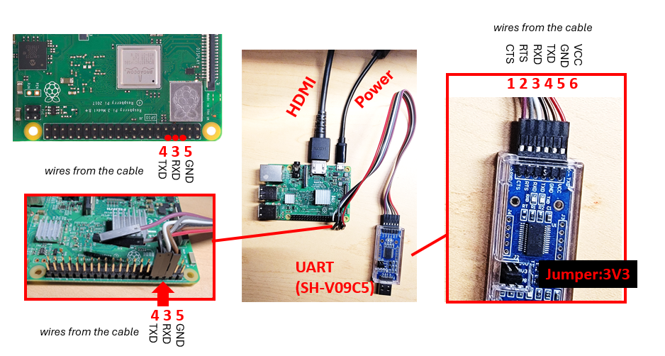
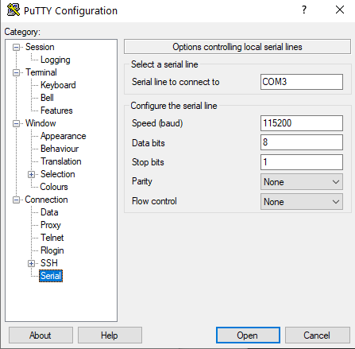
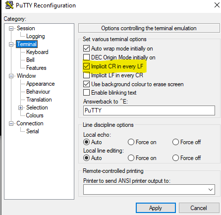
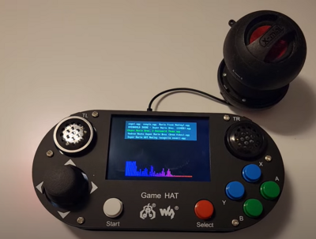
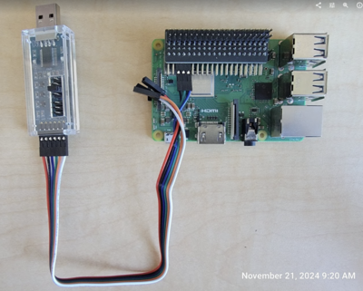
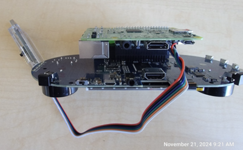
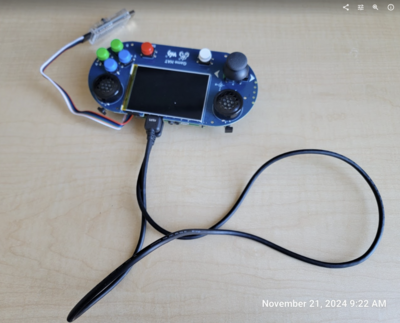

Setup the raspi3 hardware
Table of Contents
- Check list
- Detailed descriptions
- Prepare SD card
- Build and install the kernel
- Plug in the serial cable
- Configure the serial emulator
- Power up RPi3 & validate
- GAMEHAT setup
Check list
Students buy: | Item | Provided By | Notes | |-------------------------------------|-------------|-----------------------------------------------------------------------| | Rpi3 board (Model B or B+) | Student | link |
Loaner instructions for students: 1. students specify which of the following items are needed. NB: for lab1--3, only item 1--5 are in use. 2. if you need item 1, specify: are you using WSL2 or VM 4. contact: Afsara Benazir (TA) hys4qm@ 5. Hardware-kit pickup spreadsheet (mark AFTER the pickup) link 6. keep any package and cables that come with items (esp item 4 the display), and return the item in its original package.
| Item | Needed for | Notes |
|---|---|---|
| 1. A USB-UART dongle | Lab1 & later | WSL2 users: SH-V09C5. VM users: legacy FTDI dongles |
| 2. A micro SD card (>=16GB) | Lab1 & later | |
| 3. A micro SD card reader that plugs in to personal computers | Lab1 & later | the loaner reader is USB-A, not USB-C. Update: On Mac, built-in SD reader cannot be passed through to VMfusion. Use a USB reader instead. ~~If your laptop lacks USB-A ports (e.g. a recent Macbook Pro), chances are that it has a built-in SD slot already; you just need a cheap microSD-SD adapter (no SD card reader needed) which TAs can provide~~ |
| 4. A display w/ HDMI + an HDMI cable | Lab1 & later | The loaner display comes with the needed HDMI-microHDMI cable & USB-C power supply |
| 5. A power supply for rpi3 (Micro USB, 5v3A, with inline switch) | Lab1 & later | In a pinch, rpi3 can be powered via a microUSB cable connected to any USB-A port (e.g. from your PC, or any cheap USB charger). That should suffice for lab1/2 which do not draw high power. For later labs, better use 5v3A charger to provide enough power |
| 6. USB keyboard | Lab4 & later | |
| 7. Waveshare GAME HAT | Lab5+ | |
| - Battery (18650 lithium) | can be charged in place | |
| - HDMI cable | for debugging with an external display | |
| - 40pin header extender, angled | for debugging by exposing its UART port | |
| - Speaker |
Prepare SD card
Assume that you have finished setting up VM here.
Connect the SD card reader to VM. Then in the VM:
cd uva-os-main/make-sd/
sudo ./make-sd.sh /dev/sdX
Details here: How to prepare SD cards for experiments
Connect the UART cable
Rpi3 <-- a USB-serial cable ---> PC (running a terminal emulator)
After you get a serial cable, you need to make the connection.
The legacy dongle (for VM users; not for WSL2 or native Win10 due to driver issues)

the newer (SH-V09C5) dongle (for WSL2 or VM users)

An example setup of Macbook Pro, which uses USBA-USBC adapter for the UART dongle. Note that HDMI is yet to be connected.
Configure the serial emulator
VM/Linux users
Assume that you have finished setting up VM here
sudo minicom -b 115200 -o -D /dev/ttyUSB0 -C /tmp/minicom.log
Some students report brltty service interfere the uart setup. You can check if the service is inactive like the screenshot shown below.

WSL2 users: PuTTY recommended. A sample configuration below.

Change the terminal settings like this:

Note: your PC may give different names to the USB-UART dongle, e.g. COM4. Find it out by looking at Windows Device Manager.
Power up & test
Use a microUSB power supply rated at 5V3A or higher. In a pinch, rpi3 can be powered via a microUSB cable connected to any USB-A port (e.g. from your PC, or any cheap USB charger, often rated 5V1A). That should suffice for lab1/2 which do not draw high power. For later labs, better use 5v3A charger to provide enough power.
If everything works OK, the provided "test" kernel (make-sd/bootfs/kernel8-rpi3.img, md5sum 074d1c0bae0a3572bc302d8f3d017a97) will boot and show on the UART:
To test the display, try make-sd/bootfs/kernel8-rpi3-display.img (to use it, rename this file to kernel8-rpi3.img on SD card and reboot rpi3).
it will cycle through four colors on display:
https://github.com/user-attachments/assets/194a12e3-30f1-481e-9378-114059aae0f9
Build and install your kernel
cd uva-os-world1
export PLAT=rpi3
| Action | Command |
|---|---|
| To clean up | ./cleanall.sh |
| To build everything | ./makeall.sh |
If everything builds OK, kernel/Makefile should copy the kernel image (kernel8-rpi3.img) to the SD card, in the "bootfs" partition. See kernel/Makefile for details.
GAMEHAT setup
Follow the Waveshare website instructions to assemble it. LEAVE THE back cover off. Plug in the speaker for sound. Insert SD card and power up.

However the UART pins are blocked. To access it for debugging:
Connect the 40pin header extender to the Rpi3. The connect the serial cable to the extender.

Put Rpi3 back on

Connect the display to the Rpi3 via a HDMI cable (the hard HDMI connector that comes with the gamehat is too short -- not used).
